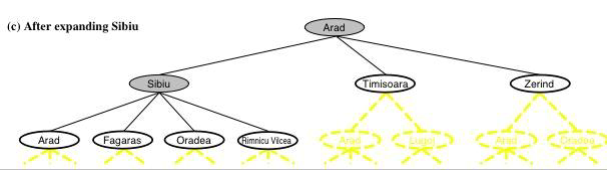

Created woensdag 30 oktober 2019
The following is an example for applying the state-space approach!
Two jars of 5 and 3 liters. The goal is to get 1 liter.
State
- 2 jars
- each can have an amount of water
- the state representation could be like (x, y) where the numbers represent the the amount that could go into each jar; e.g. (0, 1) or (x, 2)
Actions
- how many ways can you fill in the jars; left: (x, y) -> (5, y) or right (x, 3) and most importantly is pouring from one jar to another
Decision making as search
We have the space representation, then we search through the tree that represent the current state and the whole state of the game(or program)
When having the problem and having the goal declared, the the next step is building a tree in which you start from a node and write down what possible actions you can take, then the decision is when you decide whether the current node is the goal state you wanted, if not then expand and see other options.

Fringe exists in the structure with which the space representation is implemented, and contains generated nodes which are not yet expanded; in the picture above it would be Arad, Fagaras, Oradea ad Rimmiou Vilcea!
Algorithms for creating search trees:
Performance is measured in
- Completeness; does it always find a solution if exists?
- Optimality; does it always find the least-cost solution?
- Time complexity; number of nodes checked/expanded?
- Space complexity; number of nodes stored in the state representation?
- b - maximum branching factor of the search tree; a fixed amount of choices
- d - depth of the least-cost solution
- m- max depth of the state space(may be infinity)
BF
Is a breadth-first search in which the fringe is FIFO queue. Where the items in the queue will be checked after they're expanded; or that are known
The implementation is simple
- start with the root
- put it into the FIFO(fringe)
- add the children successors at the end of the queue
- then check the first not checked item in the queue
Performance is measured in
- Completeness; does it always find a solution if exists? y
- Optimality; does it always find the least-cost solution? y
- Time complexity; number of nodes checked/expanded?
- would be expressed in: b to the power of d = b^(d+1)
- Space complexity; number of nodes stored in the state representation?
- would be expressed in: b to the power of d = b^(d+1)
DF
Is a depth-first search in the fringe is a LIFO stack. Where the nodes and their sub-nodes in the stack will be checked after they're expanded and goes to the next nodes.
A drawback is that DF might not find the solution ant thus gets stuck at some deep level. This happens if the state space tree has an infinite n of depth; which is likely.
Performance is measured in
- Completeness; does it always find a solution if exists? not always
- Optimality; does it always find the least-cost solution? n
- Time complexity; number of nodes checked/expanded?
- would be expressed in: b to the power of d = b^(d+1)
- Space complexity; number of nodes stored in the state representation?
- would be expressed in: b times m = bm
DL
Is a depth-limited, or depth-first limited, search in the fringe is a LIFO stack. And is a solution for the pitfalls of the plain DF search
":Uninformed Search"
Performance is measured in
- Completeness; does it always find a solution if exists? yes if 1 >= d
- Optimality; does it always find the least-cost solution? n
- Time complexity; number of nodes checked/expanded?
- would be expressed in: b
- Space complexity; number of nodes stored in the state representation?
- would be expressed in: b times m = bm
ID
Is a iterative deeping search; often used in combination with DF and it combines benefits of DF and BF search.
It works similar to DF search, the obvious difference is that it has a limit of how far deep it can go.
Performance is measured in
- Completeness; does it always find a solution if exists? y
- Optimality; does it always find the least-cost solution? y
- Time complexity; number of nodes checked/expanded?
- would be expressed in: b to the power of d = b^(d)
- Space complexity; number of nodes stored in the state representation?
- would be expressed in: b times d = bd
Search direction
There are two ways
- Data-driven; where you start from a point to the goal
- Goal-driven; where you start from the goal back to the point
example of is professor Matt is related to Williem van Oranje; goal-driven approach would be better 3^N vs 2^N